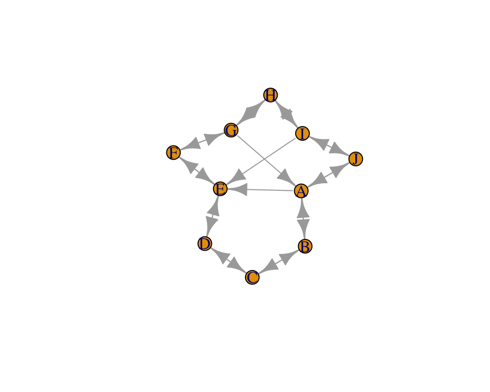
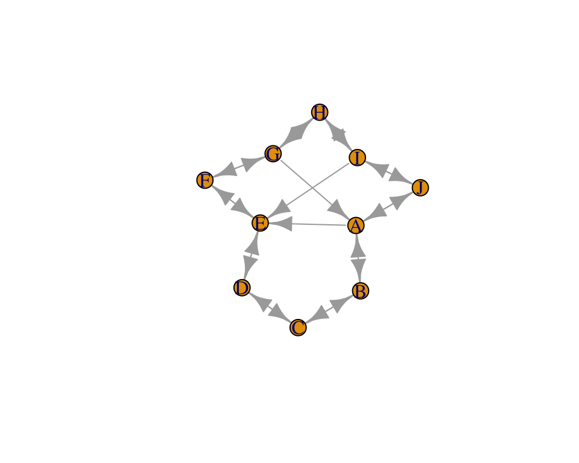
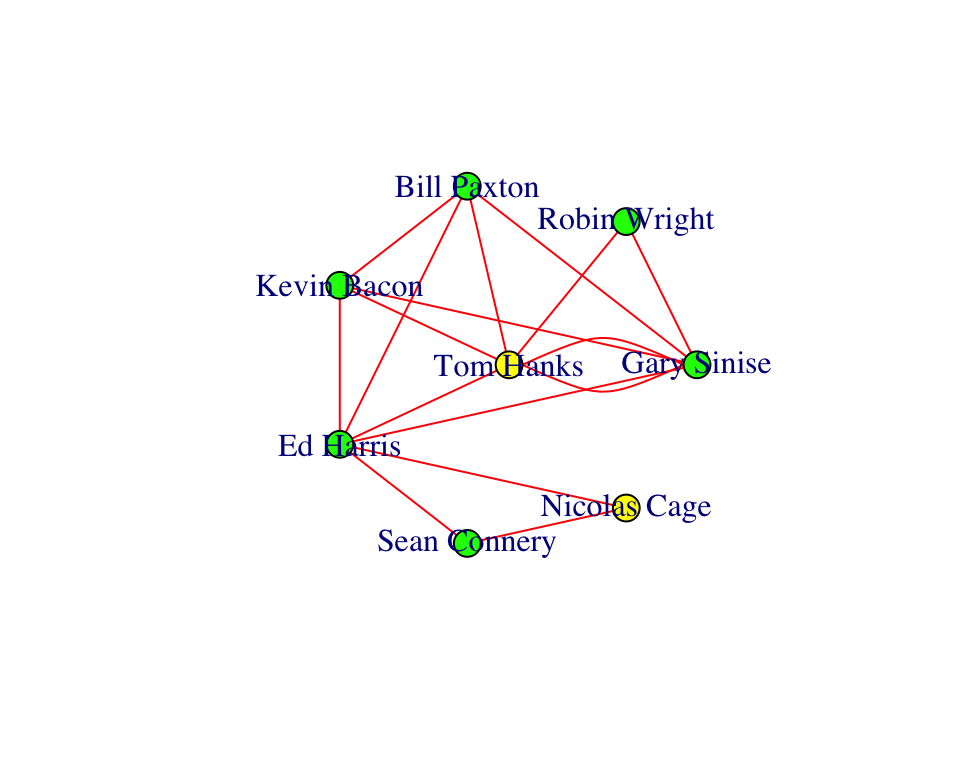

Construir/Modificar un grafo
Añadir arcos a un grafo vacío:
# Un grafo dirigido vacío
g <- make_empty_graph(n = 0, directed = TRUE)
g
IGRAPH c24d318 D— 0 0 –
+ edges from c24d318:
g <- g + vertices(c("A","B","C"))
g
IGRAPH 24e76cf DN– 3 0 –
+ attr: name (v/c)
+ edges from 24e76cf (vertex names):
# Arcos: A to C , B to C
g <- g + edges(c("A","C", "B","C"))
g
IGRAPH 2ec374e DN– 3 2 –
+ attr: name (v/c)
+ edges from 2ec374e (vertex names):
[1] A->C B->C
# Eliminar arco A
g <- g - V(g)["A"]
g
IGRAPH 0fea690 DN– 2 1 –
+ attr: name (v/c)
+ edge from 0fea690 (vertex names):
[1] B->C
# Eliminará todos los arcos conectados con A
Lista de arcos: graph() and get.edgelist():
# Un grafo dirigido vacío
# graph() id desde 1.
g1 <- graph( c(1,2, 1,3, 2,3, 3,4 ));g1
IGRAPH 61b9198 D— 4 4 –
+ edges from 61b9198:
[1] 1->2 1->3 2->3 3->4
IGRAPH 61b9198 D— 4 4 –

# El parámetro "directed" a FALSE para
# grafos no dirigidos.
g2 <- graph( c(1,2, 1,3, 2,3, 3,4 , 3, 5, 1, 3), directed=FALSE); g2
IGRAPH 6889701 U— 5 6 –
+ edges from 6889701:
[1] 1–2 1–3 2–3 3–4 3–5 1–3
IGRAPH 6889701 U— 5 6 –
#Obtener la lista de arcos a partir de un grafo
edgelist<-get.edgelist(g2) ; edgelist
[,1] [,2]
[1,] 1 2
[2,] 1 3
[3,] 2 3
[4,] 3 4
[5,] 3 5
[6,] 1 3
edgelist <- as_edgelist(g2) ; edgelist
[,1] [,2]
[1,] 1 2
[2,] 1 3
[3,] 2 3
[4,] 3 4
[5,] 3 5
[6,] 1 3
# Obtener el grafo a partir de la lista de arcos
g3<-graph( t(edgelist)); g3; plot(g3)
IGRAPH c59ec1f D— 5 6 –
+ edges from c59ec1f:
[1] 1->2 1->3 2->3 3->4 3->5 1->3
g3<-graph( edgelist); g3; plot(g3)
IGRAPH 7da7d2a D— 5 6 –
+ edges from 7da7d2a:
[1] 1->1 2->3 3->1 2->3 3->4 5->3
# algunos parámetros de plot
plot(g3,
vertex.color="green",
edge.arrow.size=0.5,
vertex.size=25,
edge.curved=0.5,
layout_as_star=TRUE)
Matrices de adyacencia: graph.adjacency(), get.adjacency()
adjm_u<-matrix(
c(0, 1, 0, 0, 1, 0,
1, 0, 1, 0, 1, 0,
0, 1, 0, 1, 0, 0,
0, 0, 1, 0, 1, 1,
1, 1, 0, 1, 0, 0,
0, 0, 0, 1, 0, 0),
nrow=6,
ncol=6,
byrow = TRUE)
#grafo a partir de matriz de adyacencia
g_adj_u <- graph.adjacency(adjm_u, mode="undirected")
plot(g_adj_u)
# Matriz de adyacencia a partir de grafo
A <- get.adjacency(g_adj_u); A
6 x 6 sparse Matrix of class “dgCMatrix”
[1,] . 1 . . 1 .
[2,] 1 . 1 . 1 .
[3,] . 1 . 1 . .
[4,] . . 1 . 1 1
[5,] 1 1 . 1 . .
[6,] . . . 1 . .
A <- as_adjacency_matrix(g_adj_u, sparse = FALSE)
A
[,1] [,2] [,3] [,4] [,5] [,6]
[1,] 0 1 0 0 1 0
[2,] 1 0 1 0 1 0
[3,] 0 1 0 1 0 0
[4,] 0 0 1 0 1 1
[5,] 1 1 0 1 0 0
[6,] 0 0 0 1 0 0
Grafo a partir de data frame
# Primero, crear el data frame
node1 = c("Ella", "Tu", "El"); node2 = c("El", "Ella", "Tu")
weight = c(10, -2, 3)
df = data.frame(node1, node2, weight); df
node1 node2 weight
1 Ella El 10
2 Tu Ella -2
3 El Tu 3
# Crear el grafo
g <- graph.data.frame(df, directed=FALSE); g
IGRAPH bdbcd42 UNW- 3 3 –
+ attr: name (v/c), weight (e/n)
+ edges from bdbcd42 (vertex names):
[1] Ella–El Ella–Tu Tu –El
# Si se conocen los vértices
# g <- graph.data.frame(df, vertices=listvertices, directed=FALSE);g
# Obtener los nombres de los nodos
V(g)$name
[1] “Ella” “Tu” “El”
# Obtener los pesos de los arcos
E(g)$weight
[1] 10 -2 3
Grafo a partir de literales
#?graph_from_literal
g <- graph_from_literal(A--C, A-+D, C-+A, , D-+C)
g
IGRAPH 4be95cd DN– 4 3 –
+ attr: name (v/c)
+ edges from 4be95cd (vertex names):
[1] A->D C->A D->C
#IGRAPH DN-- 4 4 --
#+ attr: name (v/c)
#+ edges (vertex names):
#[1] A->D D->C D->B B->A
G3 <-graph_from_literal(A-B, B -+C)
plot(G3)
G3 <-graph_from_literal(A-B, B -C)
plot(G3)
grafo aleatorio
Visualización
Buscar ayuda de los comandos plot.igraph, igraph.plotting.
A continuación dibujamos algunos grafos interesantes:
#library(igraph)
# Trees
g <- make_tree(27, children=3)
g; plot(g)
IGRAPH 8b5b1d7 D— 27 26 – Tree
+ attr: name (g/c), children (g/n), mode (g/c)
+ edges from 8b5b1d7:
[1] 1-> 2 1-> 3 1-> 4 2-> 5 2-> 6 2-> 7 3-> 8 3-> 9 3->10 4->11 4->12 4->13
[13] 5->14 5->15 5->16 6->17 6->18 6->19 7->20 7->21 7->22 8->23 8->24 8->25
[25] 9->26 9->27
# Cliques
g <- make_full_graph(n=6)
g; plot(g)
IGRAPH c3c5c9d U— 6 15 – Full graph
+ attr: name (g/c), loops (g/l)
+ edges from c3c5c9d:
[1] 1–2 1–3 1–4 1–5 1–6 2–3 2–4 2–5 2–6 3–4 3–5 3–6 4–5 4–6 5–6
# Lattices
g <- make_lattice(dimvector = c(5,5), circular = FALSE)
V(g)$label <- NA
g; plot(g)
IGRAPH de17e93 U— 25 40 – Lattice graph
+ attr: name (g/c), dimvector (g/n), nei (g/n), mutual (g/l), circular
| (g/l), label (v/l)
+ edges from de17e93:
[1] 1– 2 1– 6 2– 3 2– 7 3– 4 3– 8 4– 5 4– 9 5–10 6– 7
[11] 6–11 7– 8 7–12 8– 9 8–13 9–10 9–14 10–15 11–12 11–16
[21] 12–13 12–17 13–14 13–18 14–15 14–19 15–20 16–17 16–21 17–18
[31] 17–22 18–19 18–23 19–20 19–24 20–25 21–22 22–23 23–24 24–25
#Stars
g <- make_star(n=10,mode = "undirected")
g; plot(g)
IGRAPH d783e8e U— 10 9 – Star
+ attr: name (g/c), mode (g/c), center (g/n)
+ edges from d783e8e:
[1] 1– 2 1– 3 1– 4 1– 5 1– 6 1– 7 1– 8 1– 9 1–10
Anillo con conexiones cruzadas:
g <- make_ring(10, directed=TRUE, mutual=TRUE)
V(g)$name <- LETTERS[1:10]
g <- g + edges(9,5, 7,1, 1,5)
plot(g)
Layout
Un layout es un conjunto de coordenadas x,y preestablecidas. Se pueden especificar manualmente o usando layout_functions
Determina la posición de los nodos en la red. Hay layouts ya diseñados o puedes diseñarlo desde 0.
Intentar minimizar cruces de arcos.
Algoritmos que lo consiguen: por ejemplo - Kamada Kawai algorithm, the Fruchterman Reingold algorithm, etc.
Lykamada <- layout.kamada.kawai(g)
plot(g, layout=Lykamada)
Lyfruchtermant <- layout.fruchterman.reingold(g)
plot(g, layout=Lyfruchtermant)

lo <- layout_in_circle(g)
head(lo, n=4)
[,1] [,2]
[1,] 1.000000 0.0000000
[2,] 0.809017 0.5877853
[3,] 0.309017 0.9510565
[4,] -0.309017 0.9510565
# lo es una matriz de coordenadas
lo
[,1] [,2]
[1,] 1.000000 0.000000e+00
[2,] 0.809017 5.877853e-01
[3,] 0.309017 9.510565e-01
[4,] -0.309017 9.510565e-01
[5,] -0.809017 5.877853e-01
[6,] -1.000000 1.224647e-16
[7,] -0.809017 -5.877853e-01
[8,] -0.309017 -9.510565e-01
[9,] 0.309017 -9.510565e-01
[10,] 0.809017 -5.877853e-01
# See ?layout_ for a full list
# Para redes tipo árbol: layout_as_tree
gTree <- make_tree(15)
plot(gTree, layout=layout_as_tree(gTree, root = 1))
# layout como un grid
plot(g, layout=layout_on_grid(g))
Mallas:
Ejemplos - plantillas
Plot vocales como rectángulos
g <- make_ring(10, directed=TRUE, mutual=TRUE)
V(g)$name <- LETTERS[1:10]
g <- g + edges(9,5, 7,1, 1,5)
plot(g)
vowel <- V(g)$name %in% c("A","E","I","O","U") + 1 # gives 1 or 2
plot(g, layout=lo, vertex.shape=c("circle", "square")[vowel])

#colores
plot(g, layout=lo, vertex.color=c("tomato2", "royalblue")[vowel])
#tamaño
plot(g, layout=lo, vertex.size=c(15,30)[vowel])

#Propiedades usando atributos
V(g)$shape <- "circle" # Aplicado a todos los vértices
V(g)$size <- 15
V(g)$color <- "orange"
isVowel <- V(g)$name %in% c("A","E","I","O","U")
# Sobreescribir los nodos vocales
V(g)[isVowel]$shape <- "square"
V(g)[isVowel]$color <- "royalblue"
V(g)[isVowel]$size <- 25
plot(g, layout=lo)
Propiedades de los arcos
E(g)$width <- 1
v1 <-V(g)[isVowel]
v1
- 3/10 vertices, named, from 5b82f2b:
[1] A E I
E(g)[v1 %--% v1]$width <- 4
# Ver http://igraph.org/r/doc/igraph-es-indexing.html
plot(g, layout=lo)

#Arcos curvados
plot(g, layout=lo, edge.curved=0.3*which_mutual(g))
Agrupaciones por índices:
groupList <- list(vowelGroup = which(isVowel),
constGroup1 = c(2,3,4),
constGroup2 = c(6,7,8))
groupColours <- c(rgb(0,0.3,1,0.5),
rgb(0.8,0.4,0.1,0.5),
rgb(0.8,0.4,0.1,0.5))
plot(g, layout=layout_with_fr, # Fruchterman?Reingold layout
mark.groups=groupList, # Mark the groups
mark.col= groupColours,
# Eliminar el borde
mark.border = NA,
edge.curved=0.1*which_mutual(g))
text(0.45,0.1,"Vocales", cex=1.5)
text(0.5,0.9,"Grupo consonantes 1", cex=1.5)
text(-0.8,-1,"Grupo consonantes 2", cex=1.5)
Capítulo 10 Social Network Analysis
Disciplina con base sólida de Matemática Aplicada: Teoría de Grafos y Matemática Discreta.
Unida con Álgebra Lineal: las bases de Pagerank (algoritmo de Google) The Mathematics of Google Search.
Describir las relaciones entre los elementos de una red y extraer conocimiento acerca de las estructuras sociales que existen en esa red. Tópico de enorme interés para extraer conocimiento de redes sociales en cualquier área.
Existen muy destacadas aplicaciones para SNA:
Gephi
https://gephi.org
https://gephi.org/tutorials/gephi-tutorial-quick_start.pdf
Cytoscape
https://cytoscape.org
10.1 R for SNA
Usaremos el paquete igraph. Nos servirá para analizar más adelante datos extraído de Twiter.
Ventajas de usar R:
Reproducible research no es posible con las aplicaciones GUI.
Herramientas sólidas para manipular los datos.
Cada vez más paquetes diseñados para hacer de R una herramienta completa de análisis de redes.
Paquetes statnet y igraph.
Thomas Lin Pedersen ha publicado los paquetes tidygraph y ggraph, que aprovechan la potencia de igraph de forma coherente con el flujo de trabajo de tidyverse.
Crear gráficos de red interactivos con el marco htmlwidgets que traduce el código de R a JavaScript.
10.1.1 Elementos de una red
[1] “Tom Hanks” “Gary Sinise” “Bill Paxton” “Kevin Bacon” “Ed Harris”
[6] “Sean Connery” “Robin Wright” “Nicolas Cage”
arcos o enlaces (edges, links)
[,1] [,2]
[1,] “Tom Hanks” “Gary Sinise” [2,] “Tom Hanks” “Robin Wright” [3,] “Gary Sinise” “Robin Wright” [4,] “Tom Hanks” “Gary Sinise” [5,] “Tom Hanks” “Bill Paxton” [6,] “Tom Hanks” “Kevin Bacon” [7,] “Tom Hanks” “Ed Harris”
[8,] “Gary Sinise” “Bill Paxton” [9,] “Gary Sinise” “Kevin Bacon” [10,] “Gary Sinise” “Ed Harris”
[11,] “Bill Paxton” “Kevin Bacon” [12,] “Bill Paxton” “Ed Harris”
[13,] “Kevin Bacon” “Ed Harris”
[14,] “Ed Harris” “Sean Connery” [15,] “Ed Harris” “Nicolas Cage” [16,] “Sean Connery” “Nicolas Cage”
Nodos y arcos pueden contender atributos adicionales con importante información:
[1] “Forest Gump” “Forest Gump” “Forest Gump” “Apollo 13” “Apollo 13”
[6] “Apollo 13” “Apollo 13” “Apollo 13” “Apollo 13” “Apollo 13”
[11] “Apollo 13” “Apollo 13” “Apollo 13” “The Rock” “The Rock”
[16] “The Rock”
10.1.2 Representación de redes
10.1.2.1 Grafos como listas de arcos
data.frame o matriz (si los datos del mismo tipo) que contiene dos columnas:
Si el sentido es importante, la red se denomina dirigida, en otro caso, no dirigida.
integrante1 integrante2 1 Luis Juan 2 Ana Jose 3 Fran Amalia 4 Pedro Lucía 5 Laura Maite 6 Susana Eduardo
‘data.frame’: 6 obs. of 2 variables: $ integrante1: chr “Luis” “Ana” “Fran” “Pedro” … $ integrante2: chr “Juan” “Jose” “Amalia” “Lucía” …
10.1.2.2 Grafos como matrices
A B C A 0 1 0 B 1 0 1 C 1 0 0
num [1:3, 1:3] 0 1 1 1 0 0 0 1 0 - attr(*, “dimnames”)=List of 2 ..$ : chr [1:3] “A” “B” “C” ..$ : chr [1:3] “A” “B” “C”
A B C A 1 0 1 B 1 1 0 C 0 1 0
A B C A 1 1 0 B 1 1 1 C 1 0 1
[1,] “A” “B” [2,] “B” “A” [3,] “B” “C” [4,] “C” “A”
10.2
igraph10.2.1 Acceder a elementos de grado
10.2.2 Construir/Modificar un grafo
IGRAPH c24d318 D— 0 0 – + edges from c24d318:
IGRAPH 24e76cf DN– 3 0 – + attr: name (v/c) + edges from 24e76cf (vertex names):
IGRAPH 2ec374e DN– 3 2 – + attr: name (v/c) + edges from 2ec374e (vertex names): [1] A->C B->C
IGRAPH 0fea690 DN– 2 1 – + attr: name (v/c) + edge from 0fea690 (vertex names): [1] B->C
IGRAPH 61b9198 D— 4 4 – + edges from 61b9198: [1] 1->2 1->3 2->3 3->4
IGRAPH 61b9198 D— 4 4 –
IGRAPH 6889701 U— 5 6 – + edges from 6889701: [1] 1–2 1–3 2–3 3–4 3–5 1–3
IGRAPH 6889701 U— 5 6 –
[1,] 1 2 [2,] 1 3 [3,] 2 3 [4,] 3 4 [5,] 3 5 [6,] 1 3
[1,] 1 2 [2,] 1 3 [3,] 2 3 [4,] 3 4 [5,] 3 5 [6,] 1 3
IGRAPH c59ec1f D— 5 6 – + edges from c59ec1f: [1] 1->2 1->3 2->3 3->4 3->5 1->3
IGRAPH 7da7d2a D— 5 6 – + edges from 7da7d2a: [1] 1->1 2->3 3->1 2->3 3->4 5->3
6 x 6 sparse Matrix of class “dgCMatrix”
[1,] . 1 . . 1 . [2,] 1 . 1 . 1 . [3,] . 1 . 1 . . [4,] . . 1 . 1 1 [5,] 1 1 . 1 . . [6,] . . . 1 . .
[1,] 0 1 0 0 1 0 [2,] 1 0 1 0 1 0 [3,] 0 1 0 1 0 0 [4,] 0 0 1 0 1 1 [5,] 1 1 0 1 0 0 [6,] 0 0 0 1 0 0
node1 node2 weight 1 Ella El 10 2 Tu Ella -2 3 El Tu 3
IGRAPH bdbcd42 UNW- 3 3 – + attr: name (v/c), weight (e/n) + edges from bdbcd42 (vertex names): [1] Ella–El Ella–Tu Tu –El
[1] “Ella” “Tu” “El”
[1] 10 -2 3
IGRAPH 4be95cd DN– 4 3 – + attr: name (v/c) + edges from 4be95cd (vertex names): [1] A->D C->A D->C
10.2.3 Visualización
Buscar ayuda de los comandos plot.igraph, igraph.plotting.
A continuación dibujamos algunos grafos interesantes:
IGRAPH 8b5b1d7 D— 27 26 – Tree + attr: name (g/c), children (g/n), mode (g/c) + edges from 8b5b1d7: [1] 1-> 2 1-> 3 1-> 4 2-> 5 2-> 6 2-> 7 3-> 8 3-> 9 3->10 4->11 4->12 4->13 [13] 5->14 5->15 5->16 6->17 6->18 6->19 7->20 7->21 7->22 8->23 8->24 8->25 [25] 9->26 9->27
IGRAPH c3c5c9d U— 6 15 – Full graph + attr: name (g/c), loops (g/l) + edges from c3c5c9d: [1] 1–2 1–3 1–4 1–5 1–6 2–3 2–4 2–5 2–6 3–4 3–5 3–6 4–5 4–6 5–6
IGRAPH de17e93 U— 25 40 – Lattice graph + attr: name (g/c), dimvector (g/n), nei (g/n), mutual (g/l), circular | (g/l), label (v/l) + edges from de17e93: [1] 1– 2 1– 6 2– 3 2– 7 3– 4 3– 8 4– 5 4– 9 5–10 6– 7 [11] 6–11 7– 8 7–12 8– 9 8–13 9–10 9–14 10–15 11–12 11–16 [21] 12–13 12–17 13–14 13–18 14–15 14–19 15–20 16–17 16–21 17–18 [31] 17–22 18–19 18–23 19–20 19–24 20–25 21–22 22–23 23–24 24–25
IGRAPH d783e8e U— 10 9 – Star + attr: name (g/c), mode (g/c), center (g/n) + edges from d783e8e: [1] 1– 2 1– 3 1– 4 1– 5 1– 6 1– 7 1– 8 1– 9 1–10
10.2.4 Layout
Un layout es un conjunto de coordenadas x,y preestablecidas. Se pueden especificar manualmente o usando layout_functions
[1,] 1.000000 0.0000000 [2,] 0.809017 0.5877853 [3,] 0.309017 0.9510565 [4,] -0.309017 0.9510565
[1,] 1.000000 0.000000e+00 [2,] 0.809017 5.877853e-01 [3,] 0.309017 9.510565e-01 [4,] -0.309017 9.510565e-01 [5,] -0.809017 5.877853e-01 [6,] -1.000000 1.224647e-16 [7,] -0.809017 -5.877853e-01 [8,] -0.309017 -9.510565e-01 [9,] 0.309017 -9.510565e-01 [10,] 0.809017 -5.877853e-01
Mallas:
10.2.5 Dibujar grafos ponderados
10.2.6 Cambiar aspecto y propiedades de un grafo
Note: colores en R http://www.stat.columbia.edu/~tzheng/files/Rcolor.pdf
10.2.7 Ejemplos - plantillas

10.3 Exportar grafos
igraph permite importar y exportar de/desde un considerable número de formatos. Se usan los comandos read_graph y write_graph. Un formato abierto (open) es graphml.
Otros formatos:
edgelist: Fichero de texto con arcos en cada línea.
pajek: Pajek es un programa popular en Windows para análisis de redes.
gml: Graph Modelling Language es uno de los formatos abiertos más populares.
graphml: Graph Markup Language es un formato abierto basado en XML.
dot: Formato usado por GraphViz.
** Gephi: Para exportar al formato nativo GEXF de Gephise usa el paquete rgexf al que puede convertirse desde un objeto igraph **
Referencias:
10.4 De Twitter
10.5 Medidas de bondad, calidad
Analysis of the Networks to extract knowledge.
>> Goal of a SNA proyect
\[[http://snap.stanford.edu/class/cs224w-2015/slides/06-applicationsI.pdf\](http://snap.stanford.edu/class/cs224w-2015/slides/06-applicationsI.pdf)](http://snap.stanford.edu/class/cs224w-2015/slides/06-applicationsI.pdf](http://snap.stanford.edu/class/cs224w-2015/slides/06-applicationsI.pdf))
* Locate people in the network for…
higher compensation
positive performance evaluations
more promotions
more good ideas
> Ego network is a special type of network consisting of one central node and all other nodes directly connected to it. The central node is known as ego, while the other surrounding nodes directly connected to it are known as alters.
* \[[https://medium.com/applied-data-science/the-google-vs-trick-618c8fd5359f\](https://medium.com/applied-data-science/the-google-vs-trick-618c8fd5359f)](https://medium.com/applied-data-science/the-google-vs-trick-618c8fd5359f](https://medium.com/applied-data-science/the-google-vs-trick-618c8fd5359f))
* \[[http://olizardo.bol.ucla.edu/classes/soc-111/lessons-winter-2022/5-lesson-egonet-metrics.html\](http://olizardo.bol.ucla.edu/classes/soc-111/lessons-winter-2022/5-lesson-egonet-metrics.html)](http://olizardo.bol.ucla.edu/classes/soc-111/lessons-winter-2022/5-lesson-egonet-metrics.html](http://olizardo.bol.ucla.edu/classes/soc-111/lessons-winter-2022/5-lesson-egonet-metrics.html))
Vamos a usar este grafo como ejemplo de las medidas de bondad del grafo.
```{r}
library(igraph)
g1 <- graph( c(1,2, 1,3, 2,3,
3,4, 3,5, 1,5,
4,2, 3,6, 4,8,
8,1, 9,1, 10,2,
7,6, 5,10))
g1
summary(g1)
plot(g1)
```
**Vértices, arcos**.
```{r}
class(g1)
V(g1)
V(g1)\[1\]
E(g1)
E(g1)\[1\]
class(V(g1))
class(E(g1))
```
10.5.1 Centrality
Importancia de los nodos en un grafo.
- Número de arcos de entrada-salida de los nodos.
- Redes con alta centralidad tienen pocos nodos con muchas conexiones.
- Redes con baja centralidad tienen muchos nodos con similar o menos conexiones.
- Ver https://en.wikipedia.org/wiki/Centrality#PageRank_centrality
10.5.2 Degree
Número de arcos conectados a un vértice. Señala la importancia de un vértice o el nivel de actividad del vértice en la red.
- Cómo de central es un nodo en la red
- Cuántos arcos de entrada-salida tiene o con cuántos nodos se conecta directamente via un arco.
> > `centr_degree`, `igraph::degree`
```{r}
g1
plot(g1)
igraph::degree(g1)
igraph::degree(g1, mode=“in”)
igraph::degree(g1, mode=“out”)
deg <- centr_degree(g1)
deg
```
10.5.3 Betweenness
Mide el grado en el que la información fluye a través de un vértice particular y su importancia relativa como un intermediario en la red.
Describe nodos que son conexiones clave o puentes entre grupos de nodos.
- El número de caminos más cortos que pasan por un nodo dado (medida relativa) - la suma de las longitudes de los caminos más cortos entre otros nodos pasando por el nodo, dividida por las longitudes de camino más cortas (no necesariamente a través del nodo) entre los otros nodos.
> > `igraph::betweenness`
```{r}
igraph::betweenness(g1)
```
- Por el vértice 6 no pasa ningún *camino más corto* entre dos vértices.
- Por el vértice 3 pasan 25 *caminos más cortos* entre dos vértices.
- …
10.5.4 Edge_betweenness
Similar al anterior pero teniendo en cuenta cada arco.
> > `igraph::edge_betweenness`
```{r}
g1 <- set.edge.attribute(g1, “weight”, value= 1)
bg <- edge_betweenness(g1)
plot(g1, edge.label = bg)
```
10.5.5 Closeness
Distancia a otros nodos. Un nodo con valor alto de este estimador es más central y puede difundir la información a muchos otros nodos.
- Se obtiene como 1 divido por la suma de las distancias geodésicas desde un vértice al resto. Alcanzará su valor máximo cuando un vértice esté conectado a todos los demás. Longitud media de los caminos más cortos (geodésicos).
- Mide cuantos pasos se requieren desde un vértice para alcanzar el resto de vértices de la red.
- Caminos cortos entre vértices señalan que estos están cercanos unos a otros.
> > `centr_clo`, `igraph::closeness`
```{r}
igraph::closeness(g1)
```
10.5.6 Eigenvector
No todas las conexiones tienen la misma importancia - medida de la importancia de un nodo.
- La medida *Eigenvector Centrality* se calcula como el autovalor de mayor módulo de la matriz de adyacencia que contiene los pesos.
- *a high score to vertices that either have a lot of connections, or are connected to someone with a lot of connections*
> > Eigenvector Centrality: `eigen_centrality`
```{r}
eigen_centrality(g1)
```
10.5.7 Pagerank
Algoritmo de Google para realizar un ranking con la importancia de los resultados de la búsqueda.
Nodos son más importantes si tienen muchos enlaces de entrada.
> > `page.rank`
```{r}
page.rank(g1)
```
# Paths
Caminos de un vértice a otro o de grupos de vértices a otros.
10.5.8 Diameter
El máximo camino más corto entre cualquier par de nodos. En grafos muy grandes indica la posibilidad de que la información se difunda más o menos fácilmente. El algoritmo tiene costo $O(n^3)$. En Twitter hay cientos de millones de usuarios,…
> > `get_diameter`
> > `diameter`- el camino más largo entre dos nodos.
```{r}
plot(g1)
diameter(g1)
```
10.5.9 Caminos y distancias
**Distancia geodésica**: El menor número de arcos a atravesar para conectar dos nodos.
```{r}
sp <- shortest_paths(g1, from=“1”, to=“10”)
sp$vpath
sp1 <- shortest_paths(g1, from=“1”, to=“9”)
sp1$vpath
distances(g1)
```
Relacionado con distancias:
> > `distance_table, mean_distance`
# Clustering
*Whether your friends are likely to be friends*.
**Grupos**: Subconjunto de vértices que comparten características en común.
- Una primera forma es buscar los triángulos en el grafo. \*La medida de clustering (transitividad) es la frecuencia relativa de triángulos cerrados.
$$C=\frac{3*\mbox{ número de triángulos }}{\mbox{número de triples conectados}}$$
10.5.10 Transitivity
*friends of friends to be friends and enemies of enemies to be enemies*
Probabilidad de que vértices adyacentes de un vértice estén conectados - se denomina también coeficiente de agrupación o *clustering*.
> > `transitivity`, `shortest_paths`
10.5.10.1 Global clustering:
```{r}
transitivity(g1, type = “global”)
```
10.5.10.2 Local clustering
Fracción de triples conectados a través de cada vértice que son cerrados.
```{r}
transitivity(g1, type = “local”)
```
# Otras medidas y definiciones
- Densidad: Número de conexiones respecto al total de conexiones posibles. Un grafo completo tiene una densidad igual a 1 - `edge_density`.
- Popularidad: nodos que son centrales tienden a ser más populares.
- Cliques: todos con todos - `clique_num(g, min=k)` encuenta cliques con un mínimo de k vértices.
- Componentes: Una componente es el conjunto de vértices de la que tienen conexiones entre ellos. Una red puede tener varias componentes - `components`
- Nodos a distancia k - `random_walk`.
- Hub, Authorities - `hub_score, authority.score` un nodo se denomina hub tiene muchos enlaces de salida y se denomina authorities si tiene muchos de entrada.
- detección de comunidades: `cluster_edge_betweenness`
10.6 Proyecto SNA - USairports
Nota: Buscar información en https://igraph.org/r/
Cargamos la librería igraphdata y el dataset USairports.
Visualizar el grafo.
Usar función
Vpara acceder a los vértices del grafo. Visualizar los cinco primeros vértices.Usar función
Epara acceder a los arcos del grafo. Visualizar los cinco primeros arcos.Mira las propiedades asociadas a los vértices
vertex_attr_names,vertex_attr.Usando estas propiedades extrae los nombres de los 5 primeros aeropuertos y de sus ciudades. 6.Examina las propiedades asociadas a los arcos
edge_attr_names, `edge_attr```.Usando estas propiedades extrae los nombres de los 5 primeros compañías aéreas (carrier), de cuantas salidas tiene cada una de estas compañías.
Mira las conexiones entre los cinco primeros aeropuertos.
Usa
vcountpara saber el tamaño del grafo.Usa
V()y las funciones de manejo de listas para añadirle un nuevo atributo a los vértices: Group que va a tener como valor para cada aeropuerto los valores “A” o “B” aleatoriamente.Analizar qué hacen las siguientes órdenes:
Analizar qué hacen las siguientes órdenes:
Eliminar del grafo el aeropuerto último de la lista de aeropuertos.
Eliminar la conexión entre BJC y MIA.
Encontrar las conexiones directas desde BOS.
Encontrar las conexiones desde BOS.
Caminos y distancias entre dos aeropuertos. Explica cómo calcularlas. ¿Qué aeropuertos están a más de 1000 km?
¿Cuantas conexiones de entrada y salida tiene el primer aeropuerto?
¿Cuales son las ciudades vecinas de Bangor (conectadas por vuelos directamente) Usa
neighbors.Analizar qué hacen las siguientes órdenes:
Pasar el grafo a un dataframe.
Pasar el grafo a una matriz y encontrar los aeropuertos conectados por tres escalas. Guardar en un grafo y visualizarlo.
Aplicar a este grafo, las medidas de calidad de grafos: tamaño, diámetro, clustering, transitividad, etc. Buscar información en https://igraph.org/r/
Eliminar ciclos en el grafo. Buscar información de
simplify.10.7 Proyecto - películas + actores
10.7.1 crear grafo
IGRAPH c0e24c7 UN– 8 16 – + attr: name (v/c), Gender (v/c), BestActorActress (v/c), Movie (e/c) + edges from c0e24c7 (vertex names): [1] Tom Hanks –Gary Sinise Tom Hanks –Robin Wright [3] Gary Sinise –Robin Wright Tom Hanks –Gary Sinise [5] Tom Hanks –Bill Paxton Tom Hanks –Kevin Bacon [7] Tom Hanks –Ed Harris Gary Sinise –Bill Paxton [9] Gary Sinise –Kevin Bacon Gary Sinise –Ed Harris
[11] Bill Paxton –Kevin Bacon Bill Paxton –Ed Harris
[13] Kevin Bacon –Ed Harris Ed Harris –Sean Connery [15] Ed Harris –Nicolas Cage Sean Connery–Nicolas Cage
10.7.2 Análisis del grafo
[1] 8 [1] 8
[1] 16
Cambia algunas propiedades del grafo:
10.7.3 Cambiar atributos del grafo
Para acceder a los atributos del grafo usamos:
IGRAPH c0e24c7 UN– 8 16 – + attr: name (v/c), Gender (v/c), BestActorActress (v/c), Movie (e/c) + edges from c0e24c7 (vertex names): [1] Tom Hanks –Gary Sinise Tom Hanks –Robin Wright [3] Gary Sinise –Robin Wright Tom Hanks –Gary Sinise [5] Tom Hanks –Bill Paxton Tom Hanks –Kevin Bacon [7] Tom Hanks –Ed Harris Gary Sinise –Bill Paxton [9] Gary Sinise –Kevin Bacon Gary Sinise –Ed Harris
[11] Bill Paxton –Kevin Bacon Bill Paxton –Ed Harris
[13] Kevin Bacon –Ed Harris Ed Harris –Sean Connery [15] Ed Harris –Nicolas Cage Sean Connery–Nicolas Cage $name [1] “Tom Hanks” “Gary Sinise” “Robin Wright” “Bill Paxton” “Kevin Bacon” [6] “Ed Harris” “Sean Connery” “Nicolas Cage”
$Gender [1] “Male” “Male” “Female” “Male” “Male” “Male” “Male” “Male”
$BestActorActress [1] “Winner” “None” “None” “None” “None” “Nominated” [7] “None” “Winner”
$Movie [1] “Forest Gump” “Forest Gump” “Forest Gump” “Apollo 13” “Apollo 13”
[6] “Apollo 13” “Apollo 13” “Apollo 13” “Apollo 13” “Apollo 13”
[11] “Apollo 13” “Apollo 13” “Apollo 13” “The Rock” “The Rock”
[16] “The Rock”
[1] “Male” “Male” “Female” “Male” “Male” “Male” “Male” “Male”
[1] “Winner” “None” “None” “None” “None” “Nominated” [7] “None” “Winner”
[6] “Apollo 13” “Apollo 13” “Apollo 13” “Apollo 13” “Apollo 13”
[11] “Apollo 13” “Apollo 13” “Apollo 13” “The Rock” “The Rock”
[16] “The Rock”
$name [1] “Tom Hanks” “Gary Sinise” “Robin Wright” “Bill Paxton” “Kevin Bacon” [6] “Ed Harris” “Sean Connery” “Nicolas Cage”
$Gender [1] “Male” “Male” “Female” “Male” “Male” “Male” “Male” “Male”
$BestActorActress [1] “Winner” “None” “None” “None” “None” “Nominated” [7] “None” “Winner”
$color [1] “green” “green” “green” “green” “green” “green” “green” “green”
8 x 8 sparse Matrix of class “dgCMatrix” Tom Hanks Gary Sinise Robin Wright Bill Paxton Kevin Bacon Tom Hanks . 2 1 1 1 Gary Sinise 2 . 1 1 1 Robin Wright 1 1 . . . Bill Paxton 1 1 . . 1 Kevin Bacon 1 1 . 1 . Ed Harris 1 1 . 1 1 Sean Connery . . . . . Nicolas Cage . . . . . Ed Harris Sean Connery Nicolas Cage Tom Hanks 1 . . Gary Sinise 1 . . Robin Wright . . . Bill Paxton 1 . . Kevin Bacon 1 . . Ed Harris . 1 1 Sean Connery 1 . 1 Nicolas Cage 1 1 .
Recordar usar funciones vectoriales:
$Gender [1] “Male” “Male” “Female” “Male” “Male” “Male” “Male” “Male”
$BestActorActress [1] “Winner” “None” “None” “None” “None” “Nominated” [7] “None” “Winner”
$color [1] “green” “green” “green” “green” “green” “green” “green” “green”
$Movie [1] “Forest Gump” “Forest Gump” “Forest Gump” “Apollo 13” “Apollo 13”
[6] “Apollo 13” “Apollo 13” “Apollo 13” “Apollo 13” “Apollo 13”
[11] “Apollo 13” “Apollo 13” “Apollo 13” “The Rock” “The Rock”
[16] “The Rock”
$color [1] “red” “red” “red” “blue” “blue” “blue” “blue” “blue” “blue” “blue” [11] “blue” “blue” “blue” “red” “red” “red”
Más información de los grafos, vértices y arcos: color, size, shape, etc.
https://igraph.org/r/doc/
[[https://igraph.org/r/doc/plot.common.html](https://igraph.org/r/doc/plot.common.html](https://igraph.org/r/doc/plot.common.html
[5] Gary Sinise –Bill Paxton Gary Sinise –Kevin Bacon [7] Gary Sinise –Ed Harris Bill Paxton –Kevin Bacon [9] Bill Paxton –Ed Harris Kevin Bacon –Ed Harris
[11] Ed Harris –Sean Connery Ed Harris –Nicolas Cage [13] Sean Connery–Nicolas Cage
Definimos la importancia como el número de películas multiplicado por 15.
Ayuda: ver funciones
strength(grafo)
10.7.4 Modificar el grafo
Para practicar todo lo visto: - Modifica los atributos del grafo para que se muestre parecido al siguiente (función
legendpara las leyendas):[5] Gary Sinise –Bill Paxton Gary Sinise –Kevin Bacon [7] Gary Sinise –Ed Harris Bill Paxton –Kevin Bacon [9] Bill Paxton –Ed Harris Kevin Bacon –Ed Harris
[11] Ed Harris –Sean Connery Ed Harris –Nicolas Cage [13] Sean Connery–Nicolas Cage